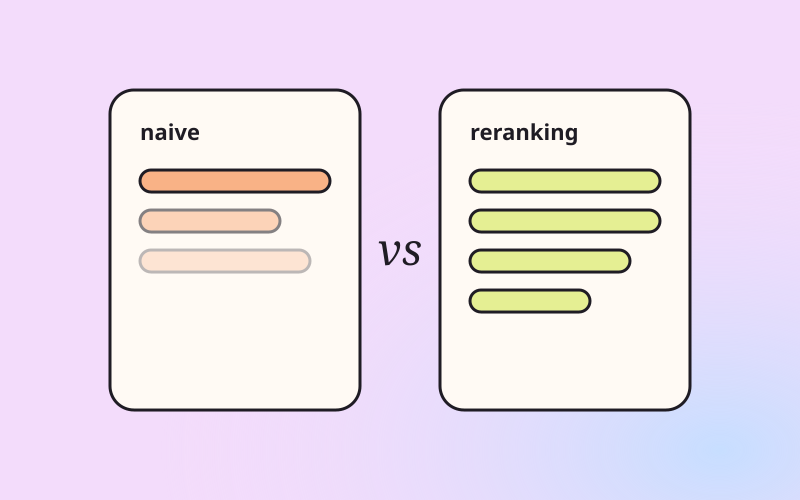

Case study 02 · Portfolio build
ragpatterns
Seven retrieval patterns, one corpus that happens to be my own bookshelf, and nine fixed questions with reference answers written before any pipeline ran. Most teams pick a RAG pattern by accident. This shows how to pick one on purpose.

Background
Teams usually choose one RAG setup early and then tune it forever. But patterns fail in different places. Similarity search can't count or filter. A plain vector index can't follow a relationship. Nothing text-only can read a photo. An agent can be slower and pricier than the question deserves.
I wanted one place where the same questions hit every pattern, so the differences are visible instead of argued about.
Solution
Seven patterns run side by side: naive vector search, reranking, a query tool, graph RAG, multimodal RAG, an agentic router and multi-agent. Everything else is held still: same corpus, same generation model, same prompt template.
- Each question isolates one failure mode: quoted-text lookup, filtering a ledger, conflicting sources, relationships, identifying a book from a photo, combining several sources. The last three are questions I actually ask my bookshelf.
- The corpus is real and messy: Goodreads export, Kindle highlights, a list of who recommended what, and photos of covers and pages.
- The key design decision: the highlights are the semantic index and the ledger is a table. Structured data never gets embedded as text, which stops the system from inventing books.
Receipts
I grade every answer by hand against the reference: correct scores 1, partial or generic 0.5, wrong or invented 0. Alongside the verdict I track whether the right source actually reached the model, how many model calls each pattern needs, latency and tokens.
v0 publishes predicted traces, clearly labelled as predictions. Every result is a prediction until a version measures it.
Not done yet
- v1 · Naive, reranked and ledger tool live; first two rows measured.
- v2 · Graph extraction; the relationship question measured.
- v3 · Multimodal embeddings; the photo question measured.
- v4 · Router and multi-agent measured.
- v5 · Full grid, cost comparison, consistency rates, ten more questions and a second reader.
Known bias: a few hundred books is a small corpus, and small corpora flatter naive RAG. The questions are designed to push each pattern where it should win or lose.
Next project